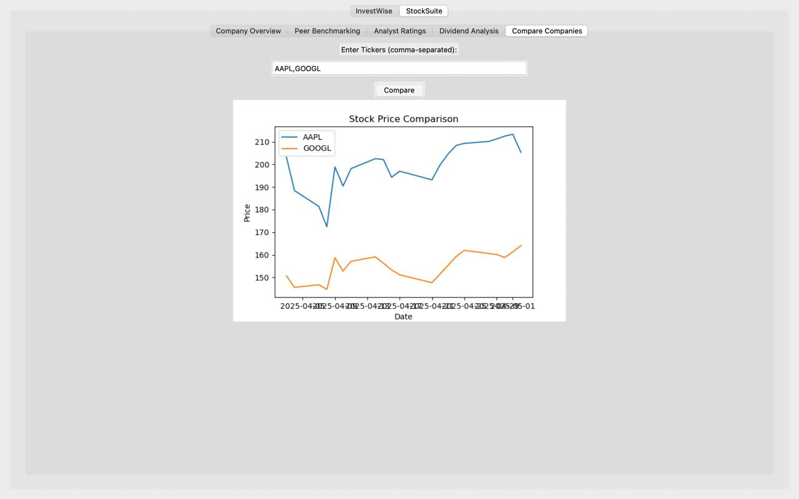
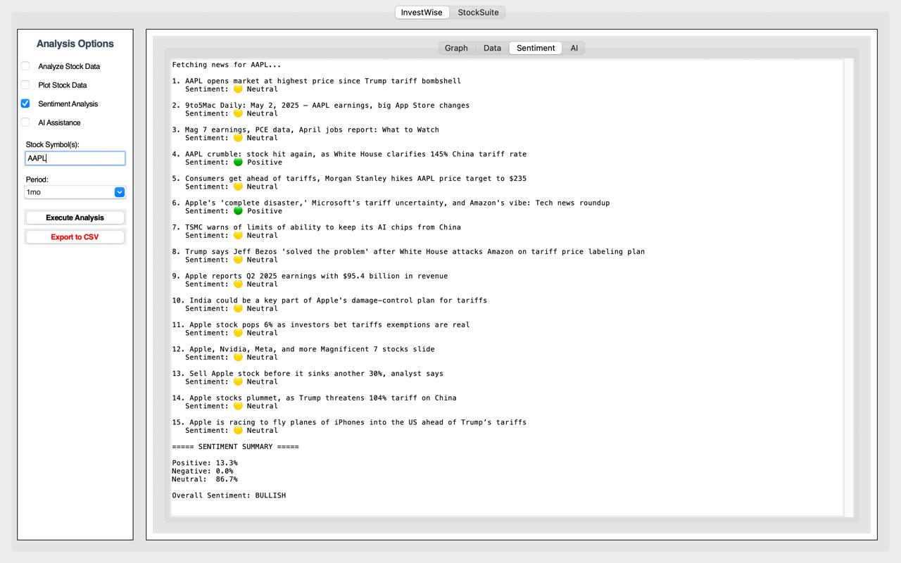

InvestWise – Python Stock Analysis Suite
🛠 Tech Stack:
- Python, Tkinter (for GUI)
- Matplotlib, Pandas, yfinance, TextBlob
- NLP & Sentiment Analysis
📌 Project Overview:
InvestWise is a Python-based desktop application designed to help users analyze stock market trends, news sentiment, and company performance. It provides a user-friendly interface for real-time stock price tracking, financial data visualization, and intelligent insights using sentiment analysis.
📊 Key Features:
- Stock Data Analysis: Retrieve historical stock prices and visualize them.
- Company Comparison Tool: Compare prices using dynamic line graphs.
- Sentiment Analysis Module: Analyze news headlines using NLP (TextBlob).
- AI Assistance (Future Scope): GPT-like integration for finance Q&A.
- Export Functionality: Save data/sentiment reports as CSV files.
💡 Unique Highlights:
- Multi-tab GUI: Company Overview, Peer Benchmarking, Analyst Ratings, etc.
- Clean sentiment visualization with mood meter
- Designed for non-coders interested in financial data
🧠 What I Learned:
- GUI development using Tkinter
- API data collection using yfinance
- Natural Language Processing via TextBlob
Images:


← Back to Portfolio